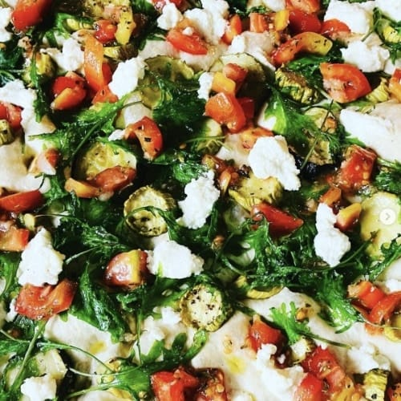
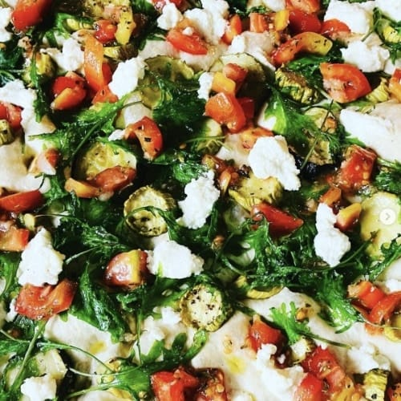

Alberta's beloved basket weaving retreat returns for its third year, and we invite you to join us! Come connect with others and experience the joy of creating something with your hands.
If you're new to weaving and eager to learn, we have beginner-friendly workshops designed just for you. For those with more experience, there are a variety of projects to help you build on your skills and explore new techniques.
We are offering classes in the morning, afternoon, or as full-day sessions. Feel free to mix and match by signing up for both a morning and afternoon session, or choose a full-day session each day. For those wanting to immerse themselves, we also have two-day workshops for more involved projects.
Morning (AM) classes run from 9:00 AM to 1:00 PM, and afternoon (PM) classes run from 2:00 PM to 6:00 PM.
Click any of these workshops to see what you'll learn and what tools you need to bring.
The Alberta Basketry Guild is hosting its very first Annual General Meeting, and we'd love for you to be part of this milestone!
This is your chance to connect with fellow basketry enthusiasts, share ideas, and help shape the future of our growing community. Whether you're a seasoned weaver or just starting out, your voice and presence matter.
As a special treat, professional basket weaver Cathie Harper will give a presentation about some of the tools she uses to make baskets—an inspiring look at the craft through the eyes of an expert.
We'll cover important updates, discuss upcoming events, and, of course, celebrate the art of basketry together. Don't miss this opportunity to be part of something special!
On Saturday, we will gather to celebrate the life of Maryann Borch, a founding member of the Alberta Basketry Guild and the visionary behind our annual retreat, Weaving Connections.
We will sing, cry and remember the remarkable woman who brought us together.
We will be putting together a small slideshow. If you would like to submit photos or would like us to save space for you to share something meaningful during the celebration such as a song, poem or story. Please email us at albertabaskteryguild@gmail.com
Catering will be brought to us by Elvira of Under the Linden Bakehouse. Elvira is a part of our weaving community, and we are thrilled that she has offered to provide us with a selection of her wholesome vegetarian cooking and baking. Lunches will be $25, and suppers will be $30. Please bring a dinner size plate, standard soup bowl, and utensils.
Elvira will attempt to accommodate any dietary restrictions; however, it may be wise to bring a few of your favourite snacks if your diet is very limited. There will be a fridge available to all who need it.
If you are tenting in the greenhouse or just want to join us for an early morning hangout you will need to bring your own breakfast provisions. There will be a toaster and kettle available. We kindly ask tenters to bring a cooler to store their breakfast supplies in their tent, if possible.

 

Tenting: $30 for the weekend. We will have limited space, so preference will be given to tenters who intend to stay for the whole weekend. Get your registration in as soon as possible, and then email albertabasketryguild@gmail.com to secure your spot.
Billeting: We have had a few of our members offer space in their homes for the duration of the retreat. Each home is different, but most people are offering a room for between $0 and $15 a night. If you would like to stay with someone or have room to offer another attendee, let us know in your registration form or send us an email at albertabasketryguild@gmail.com.
Celebrate the spirit of sharing and creativity at the Give and Receive Station! Bring a basket or weaving to give, and in return, choose one to take home. It's a wonderful way to connect with others and appreciate the work of fellow weavers.
The station will be open all weekend, so you can join in at any time.
Join us for our Silent Auction, featuring a variety of unique and handcrafted items, materials, and tools. Proceeds will support the Alberta Basketry Guild and future events.
The auction will take place at three times during the weekend: after supper on Friday, after lunch on Saturday, and after supper on Saturday. Don't miss your chance to place a bid on something special!
Payments for the silent auction can be made through cash, e-transfer, or credit card.
Take a break from classes and join us for an open weave, where anyone interested can add some willow to the collective creation. This year's theme is Forest Friend. Which forest friend? We will have to wait and see what emerges.
Click map to enlarge

Did you know you can attend weaving connections for free? Come hang out, join our open weave, make friends with other weavers in your area.
If you're planning to take any workshops, note that there is a $25 fee for the weekend. This helps cover our administrative costs.
You can come for the whole weekend, or just one day, or two days, whatever you want.
No matter how you plan to spend your time at Weaving Connections, you need to register. Enter your email address here and we'll email you a link to our registration form.
Sending…
Please check your email. You should soon receive a link to log in and complete your registration.
The email will be sent by "Val Town", a friendly service we're using to host our registration form.
If you don't receive the email within a minute or two, first check your spam folder, and if it's not there reach out to Freyja at albertabasketryguild@gmail.com
An unexpected error occurred. Please try again, or reach out to Freyja at albertabasketryguild@gmail.com for help.